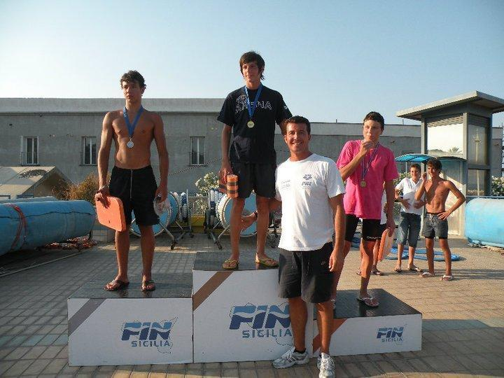
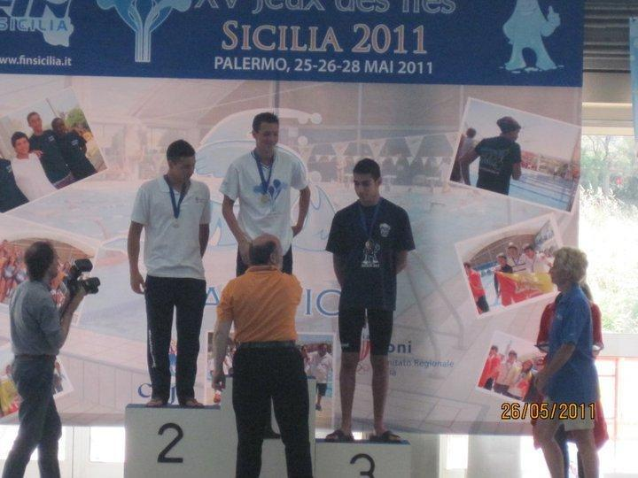
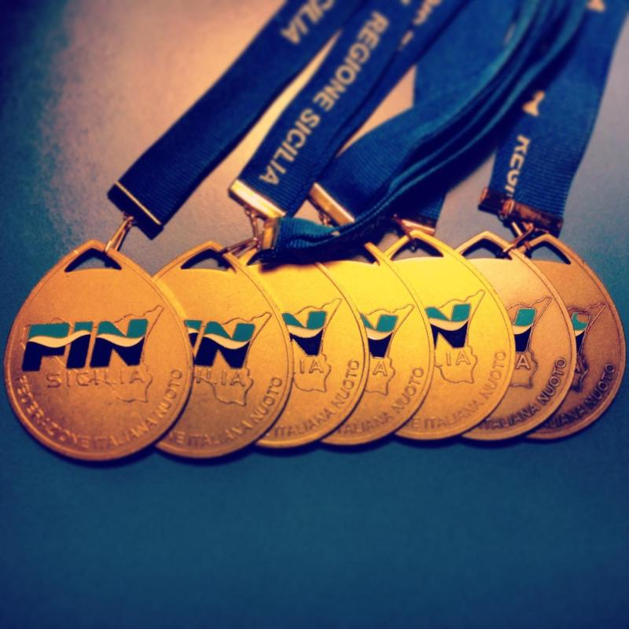

2010
My first win at the regional championships in the 100m and 200m breaststroke

2011
Participation in the Jeux des îles, international under-16 swimming competition, where I won two gold medals (50m and 100m breaststroke), one silver medal (4x100 medley relay), and one bronze medal (200m breaststroke). Below is the award ceremony for the 100m breaststroke.

The recognition for my participation and achievements at the Jeux des îles by Sergio Parisi, Regional President of the Italian Swimming Federation and CONI Sicily Councilor.

WIP
The medals I won in a single regional championship. It was one of my best regional championship I did where I also got two regional records in the 100m and 200m breaststroke.
